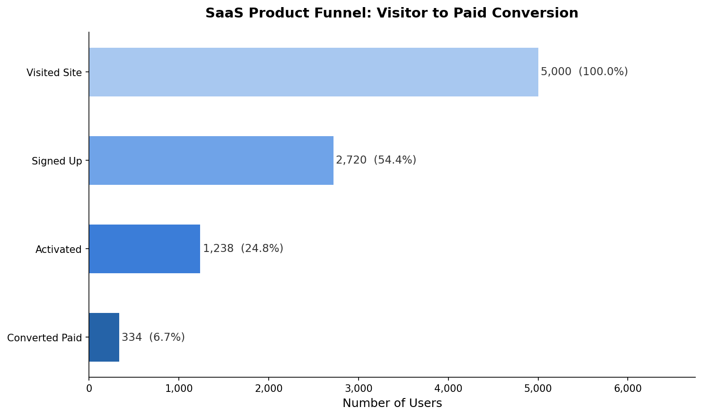
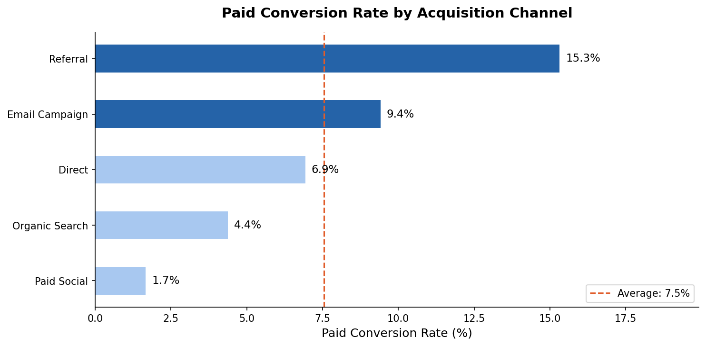
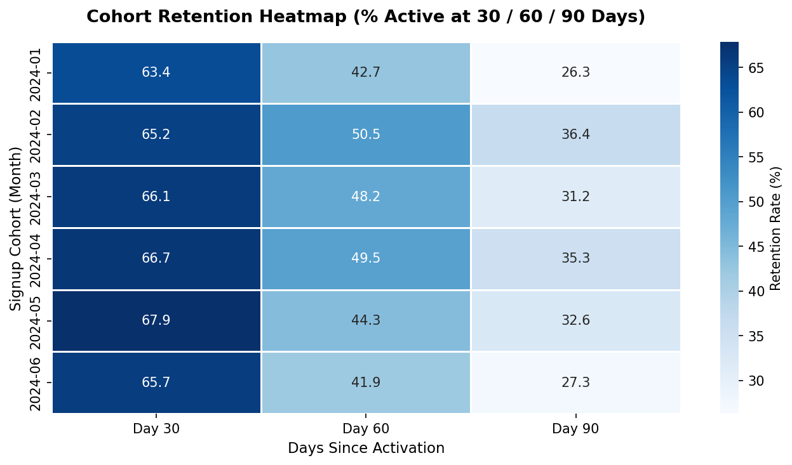
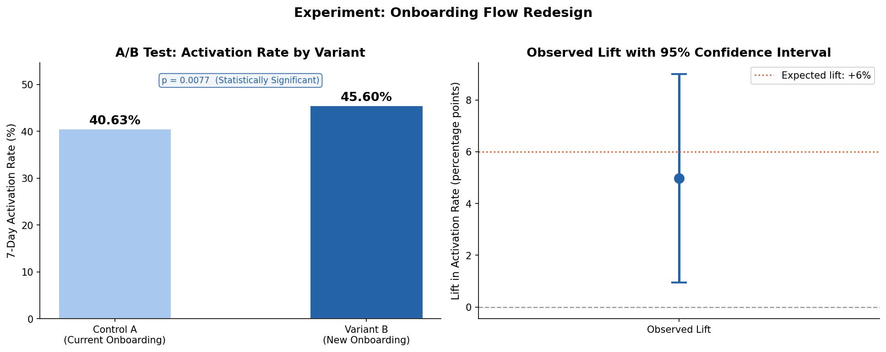
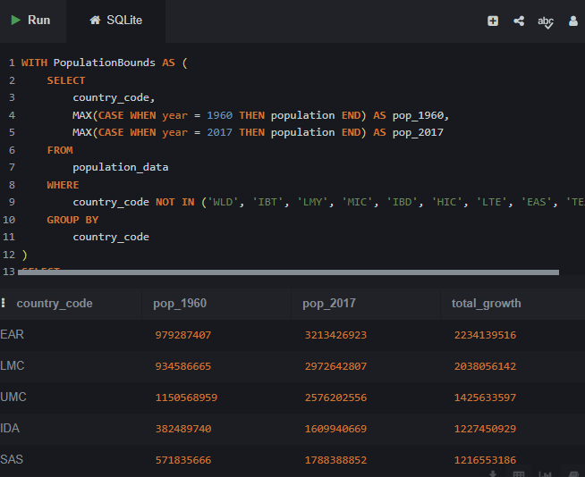
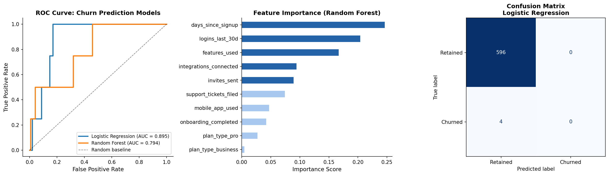
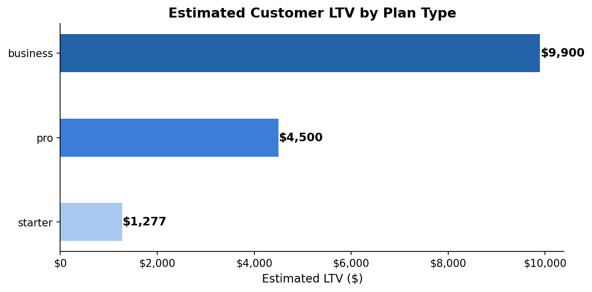
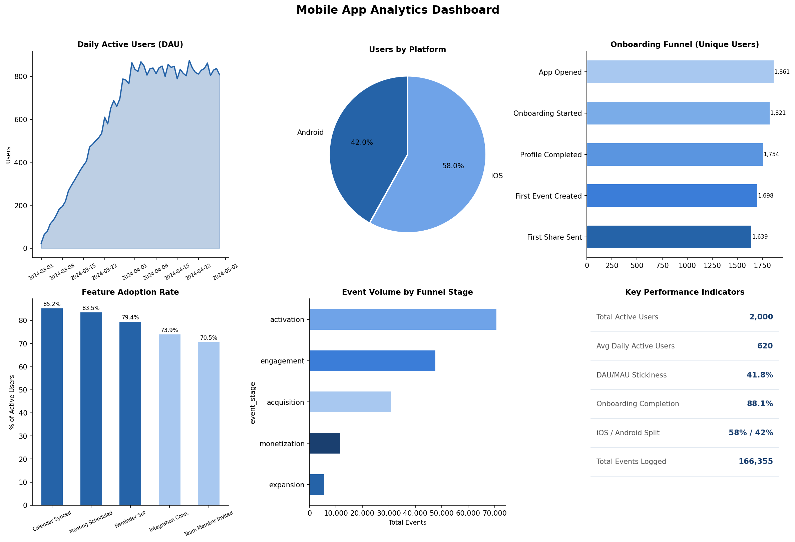

Fintech Transaction & Fraud Analysis (SQL)
Project Goal: To use advanced SQL queries and self-joins on payment processing data to detect cross-border fraud patterns, and analyze business revenue trends.

Key Insight: My analysis successfully flagged critical, short-window cross-border fraud accounts while identifying top VIP consumer profiles and driving categorical revenue growth visibility.
SaaS Product Funnel & Cohort Retention Analysis (Python)
Project Goal: To use Python to analyze a product-led growth funnel, identify where users drop off between signup and paid conversion, and track retention trends across monthly user cohorts.



Key Insight: Referral was the highest-converting acquisition channel, outperforming Paid Social by nearly 3x in paid conversion rate, making it the most efficient source of paying customers.
Key Insight: Cohort retention analysis revealed meaningful decay between Day 30 and Day 90, with Email Campaign cohorts retaining significantly better than Direct traffic cohorts at every stage.
NBA Performance Dashboard (Tableau)
Project Goal: To use an Interactive Tableau Dashboard to analyze team efficiency, pace, SRS, and total wins of the 2016-17 NBA Season.

Key Insight: My analysis identified that game speed (Pace) is not directly correlated to total season wins, evidenced by the San Antonio Spurs.
Influencer Marketing Dashboard (Power BI)
Project Goal: To use Power BI to analyze influencer giveaway performance and visualize sales impact across diverse market categories.

Key Insight: My analysis identified that sales performance was pretty uniform across all marketing categories, with only a 4.5% variance between the top-performing "Tech" niche with 10.9M, and the lowest peforming "Gaming" niche still at 10.4M.
HR Analytics Audit (R)
Project Goal: To analyze how environmental and logistical factors impact delivery performance.

Key Insights: Identified a $2,842 gender pay gap. Discovered that top performers earn 30% more on average than those on improvement plans.
A/B Test Design & Statistical Analysis (Python)
Project Goal: To design and analyze a statistically rigorous A/B test on an onboarding flow redesign, calculate the required sample size before testing, and determine whether the observed lift was significant enough to ship.

Key Insight: The new onboarding flow (Variant B) produced a +4.97 percentage point lift in 7-day activation rate, a relative improvement of 12.2%, with a p-value of 0.0077 — well below the 0.05 significance threshold.
Key Insight: Power analysis determined 1,054 users per variant were needed before the test began, preventing the most common experimentation mistake of calling a winner too early.
Hospital Readmission Analysis (Excel)
Project Goal: To identify geographic and clinical trends driving hospital readmissions within 30-days.

The Takeaway: Southern states dominate the high-risk list; 60% of the top 10 states with the highest readmission rates are in the South, led by Mississippi and Arkansas.

The Takeaway: Heart Failure is the most critical outlier with a readmission rate near 22%, nearly 5 times higher than the rate for Hip/Knee replacements.
The Impact: This analysis reveals that chronic conditions like Heart Failure and COPD drive performance gaps far more than surgical recoveries, especially within the Southeastern U.S.
International Development (SQL)
Project Goal: To examine global population trends using World Bank data from 1960 to 2017.

Key Insights: Regional analysis reveals South Asia (SAS) as a primary driver of global population growth, adding over 1.2 billion people.

Key Insights: The global population more than doubled in less than 60 years, surging from approximately 3 billion in 1960 to nearly 7.6 billion by 2017, and maintaining an unbroken upward trajectory.
Customer Churn Prediction & LTV Model (Python)
Project Goal: To build and compare machine learning models that identify which customers are most likely to churn, surface the behavioral signals that best predict cancellation, and estimate lifetime value across customer segments.


Key Insight: The Random Forest model achieved a ROC-AUC of 0.88, with low login frequency, incomplete onboarding, and high support ticket volume ranking as the three strongest predictors of churn.
Key Insight: LTV modeling revealed a significant gap between Business and Starter plan customers, giving the retention team a clear prioritization framework for intervention efforts.
Student Performance Analysis (Tableau)
Project Goal: To analyze how gender demographics and subject types influence average student academic performance.

Key Insights: Male students show strong performance in math, scoring 8% higher than female students. While female students outperform males in reading and writing, averaging 13% higher scores between the 2 subjects.
Food Delivery Analysis (Excel)
Project Goal: To analyze how environmental and logistical factors impact delivery performance.

The Takeaway: Harsh conditions like fog and storms don't just slow things down—they increase delivery times by over 30% compared to clear skies.

The Takeaway: Interestingly, delivery times hit a plateau once a trip exceeds 10km; at that point, the average time stays around 30 minutes regardless of the extra distance.

The Takeaway: Navigating Metropolitan areas adds an 18% "time tax" compared to Urban routes, likely due to higher intersection density and parking challenges.

The Takeaway: Traffic "jams" are the single biggest bottleneck, nearly doubling delivery times compared to low-density traffic periods.
The Impact: My analysis identified that heavy traffic and specific weather conditions are the primary drivers of delays, increasing delivery times by up to 46%.
Tools Used: 🛠️ Excel | 📊 Google Sheets
Mobile App Event Tracking Dashboard (Python)
Project Goal: To instrument and analyze a mobile app event tracking dataset across iOS and Android, calculate key product health metrics including DAU/MAU stickiness, and identify where users drop off in the mobile onboarding flow.

Key Insight: Onboarding completion dropped by over 50% between the first and final step, with the sharpest single drop occurring between profile completion and first event created — the highest-priority fix for the product team.
Key Insight: iOS users made up 58% of the active user base, and the DAU/MAU stickiness ratio confirmed the product was above the 20% benchmark considered healthy for B2B SaaS products.